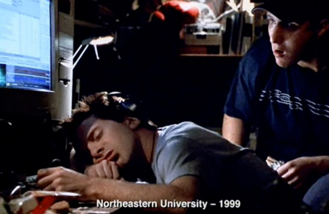

4
In 2003, X made a cameo appearance, playing himself, in the 2003 film 'The Italian Job'. In the film, one of the lead characters accuses X of stealing Y from him while he was taking a nap in their Northeastern University dorm room. Although other characters see this as mere bragging, a later scene shows X in fact creeping over Green's sleeping body to steal the code for Y. Identify X and the music sharing website Y - his most famous creation.
